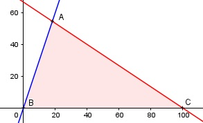

Aufgabe 79 Für den Einkauf von 2 neuen Geräten G und H stehen einem Kaufhaus 8 000 € zur Verfügung. G kostet 80 €, H 120 €. Die Anzahl von H soll maximal das Dreifache von G sein. Der Gewinn pro verkauftem G beträgt 10 €, bei H 12 €. Wieviele G und H sollte das Kaufhaus einkaufen, um maximalen Gewinn zu erzielen? x = Anzahl G y = Anzahl H Bedingungen: x > 0 x ∈ ℕ y > 0 y ∈ ℕ 80x + 120y ≤ 8 000 y ≤ 3x oder y - 3x ≤ 0 Zielfunktion: M = 10x + 12y Randgerade 1: y = 0 Randgerade 2: y = 3x Randgerade 3: 80x + 120y = 8 000

Die Eckpunkte A, B und C bilden das Planungs- gebiet, das alle Ungleichungen erfüllt. A ist der Schnittpunkt der Randgeraden 2 und 3 y = 3x Eingesetzt: 80x + 120 * 3x = 8 000 440x = 8 000 |:440 x = 18,18 y = 3 * 18,18 = 54,54 A(18,18|54,54), ganzzahlig 18 und 54, C ist der Schnittpunkt der Randgeraden 1 und 3 y = 0 Eingesetzt: 80x = 8 000 |:80 x = 100 C(100|0), liefert keine Lösung y ≠ 3x x = 18 und y = 54 in M eingesetzt: Mmax = 10 * 18 + 12 * 54 = 828 € --> zu kaufen sind 18 G und 54 H